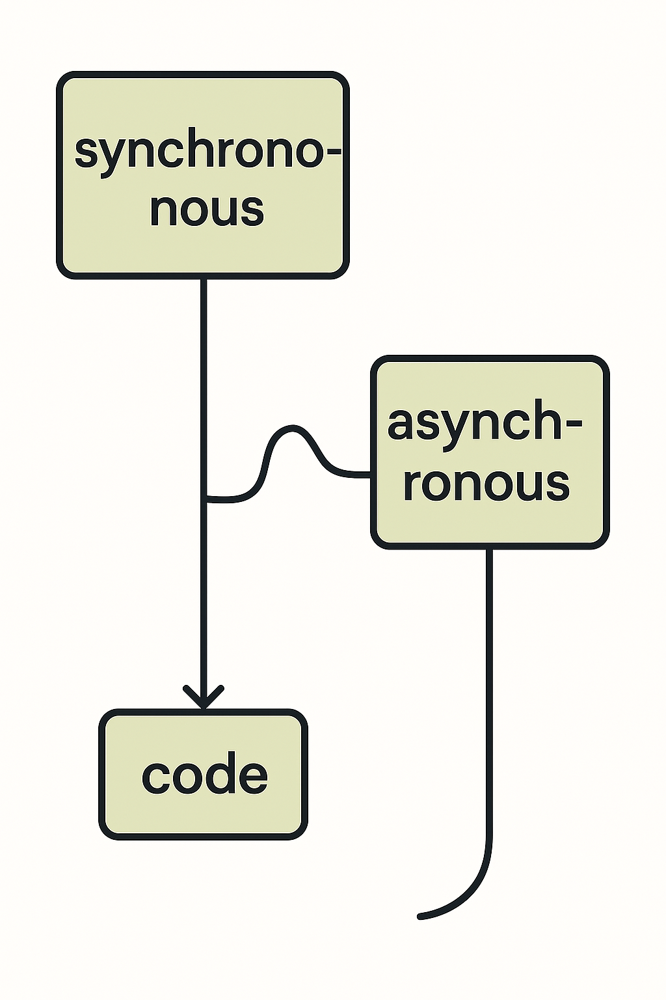
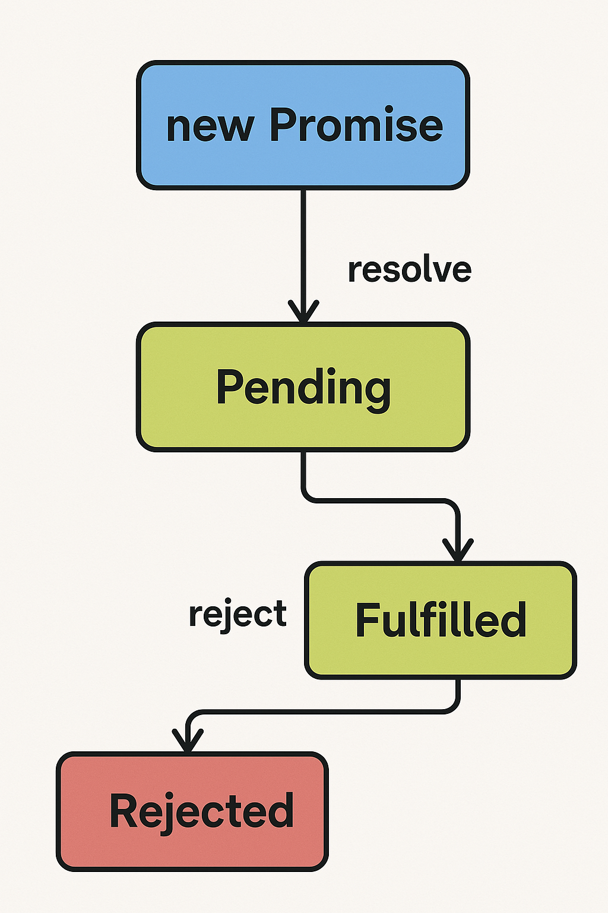

はじめに
JavaScriptは現代のWeb開発において最も重要な技術の一つです。特に非同期処理は、ユーザーエクスペリエンスを向上させるために不可欠な概念となっています。
このページでは、JavaScriptの非同期処理について、基本的な概念から実践的な使用例まで幅広く解説します。Promise、async/await、そして実際のAPI呼び出しまで、段階的に学習していきましょう。
JavaScriptの基本構文と特徴
まず、JavaScriptの基本的な特徴について確認しましょう：
- 動的型付け言語
- インタープリター言語
- プロトタイプベースのオブジェクト指向
- イベント駆動型プログラミング
- 関数型プログラミングのサポート
基本的な変数宣言
非同期処理（Promise、async/await）の解説
非同期処理は、時間のかかる処理（APIリクエスト、ファイル読み込みなど）を実行する際に、メインスレッドをブロックしないようにする仕組みです。
Promiseとは
Promiseは非同期処理の結果を表すオブジェクトです。以下の3つの状態を持ちます：
- Pending: 処理中
- Fulfilled: 処理完了（成功）
- Rejected: 処理完了（失敗）
async/awaitの使用例
実践的な使用例
実際のWebアプリケーションでよく使用される非同期処理の例を見てみましょう。